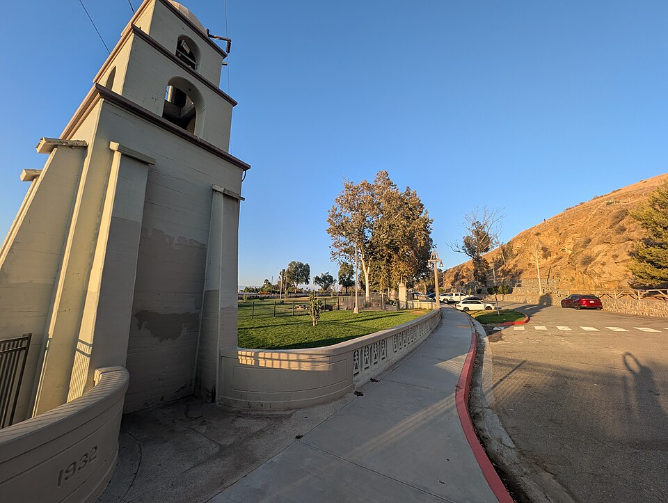

Carlson Bark Park Water
- Fenced Unknown — City calls it a Bark Park but does not describe fencing
- Water Yes — water and doggie bags available on location (City)
- Small-dog area Unknown — City notes ‘small dogs use at own risk’; separate small yard not confirmed
- Hours Closed Fridays 6–10 a.m. for maintenance (City); otherwise follow posted hours
Next to the Santa Ana River trail and Mt. Rubidoux trailheads. Some guides list the address as 4727 Scout Ln; the City Dog Parks page uses 4700 Buena Vista Ave.